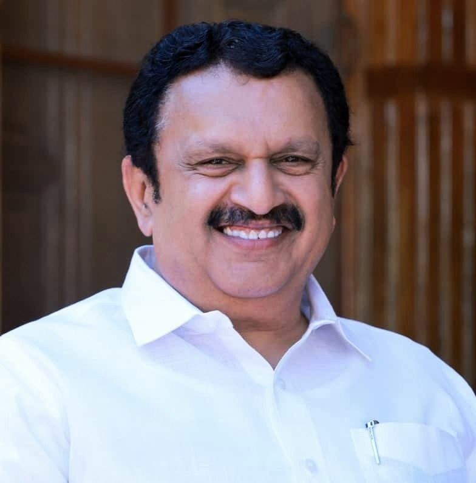

Shri K. Muraleedharan is a veteran politician from Kerala and a senior leader of the Indian National Congress. He has been actively involved in public life for several decades and has held important positions in both state and national politics.
Born into a prominent political family, he is the son of former Kerala Chief Minister K. Karunakaran. Over the years, he has represented various constituencies in the Kerala Legislative Assembly and has also served as a Member of Parliament, earning recognition for his contributions to public service and democratic governance.
Representing the Vattiyoorkavu constituency, Shri Muraleedharan has focused on issues such as infrastructure development, social welfare, employment generation, and improving public services. He is known for his extensive political experience and strong engagement with people at the grassroots level.
As a Cabinet Minister, he continues to contribute to Kerala's development through policy initiatives and administrative leadership, working towards inclusive growth and the welfare of citizens across the state.